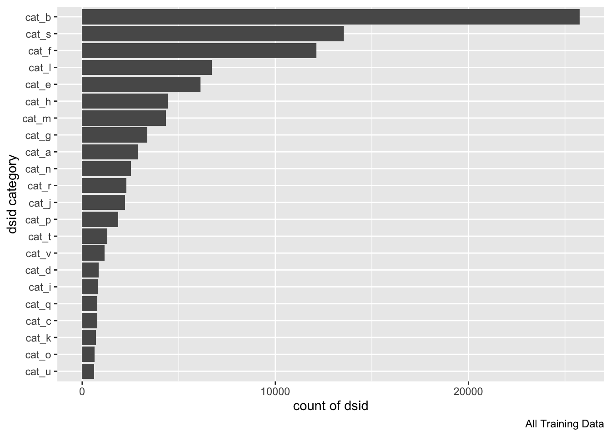
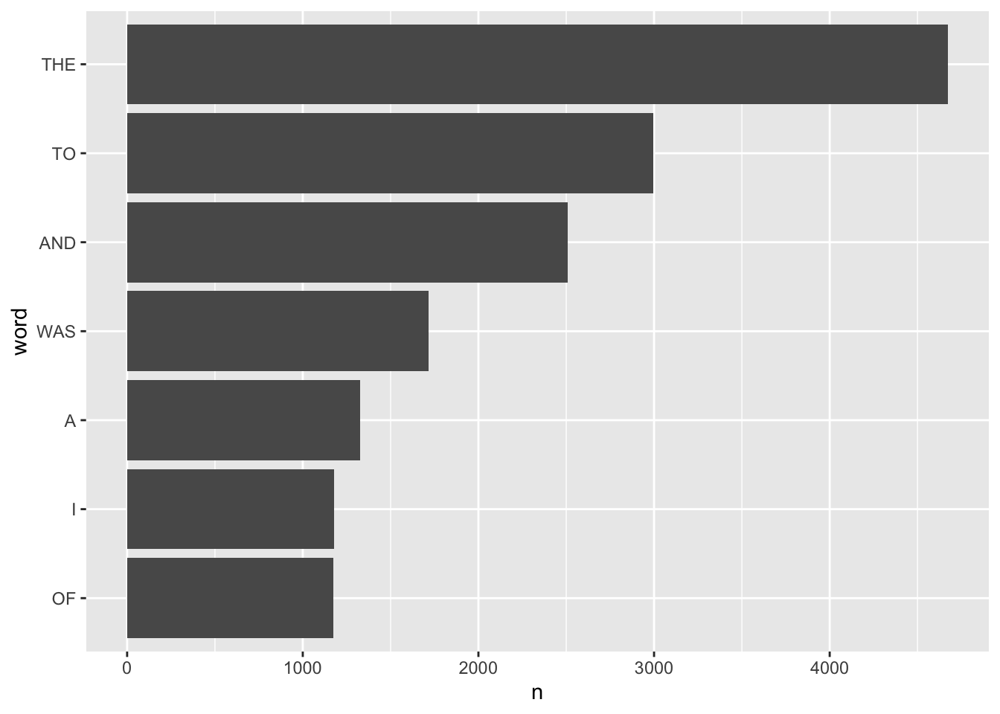
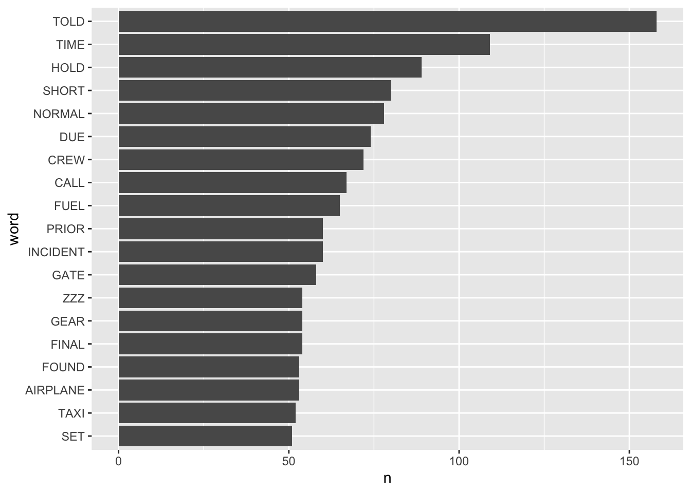
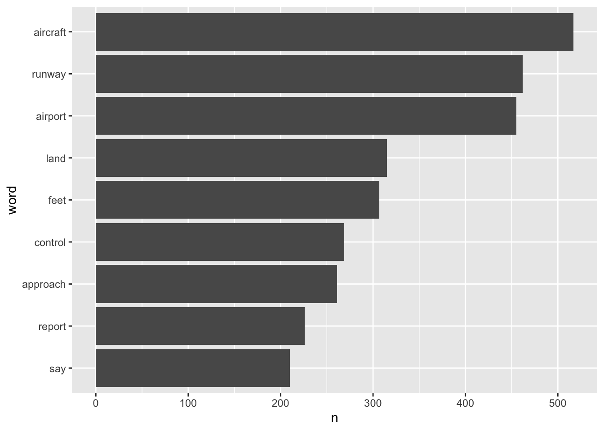
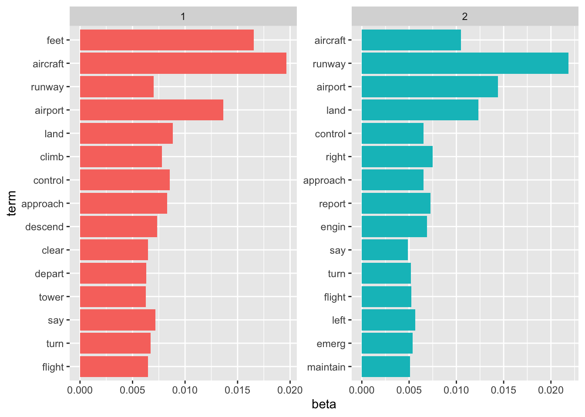
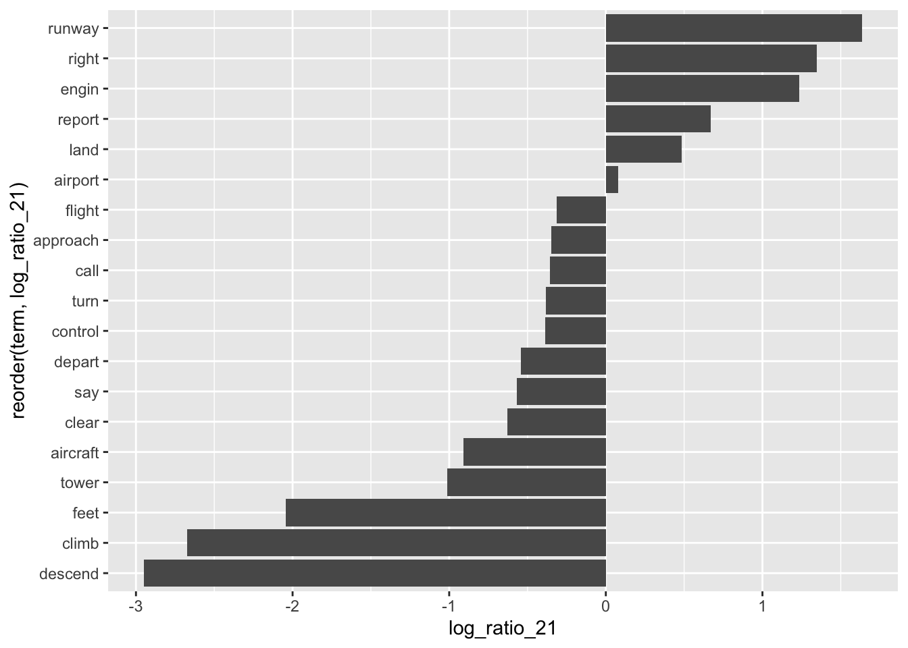

knitr::opts_chunk$set(cache=TRUE)
library(knitr)
library(wordcloud2)
library(kableExtra)
library(topicmodels)
library(tm)
library(tidyverse)
library(magrittr)
library(tidytext)
library(ggplot2)
library(dplyr)
library(tidyr)
library(gridExtra)
load('training_data.RData')
load('training_labels.RData')453 Text Analytics - Class Project - Aviation Safety Data
Text Analysis
Visualization
Phase 1 Report
What’s the Objective?
- This is the dataset used for the SIAM 2007 Text Mining competition.
- This competition focused on developing text mining algorithms for document classification.
- The documents in question were aviation safety reports that documented one or more problems that occurred during certain flights.
- The goal was to label the documents with respect to the types of problems that were described. This is a subset of the Aviation Safety Reporting System (ASRS) dataset, which is publicly available.
The data is obtained from this link.
My entire code base is stored on github.
Quick look at the data
View the data
The training data looks like this: two columns: 1st column is the dsid_id, and the 2nd column is the actual text. Each row represents one safety issue.
head(training_data,4) # A tibble: 4 × 2
doc_id text
<int> <chr>
1 1 locate _ distancemeasuringequipment FROM runway ON THE locate frequenc…
2 2 IN _ I BECAME AWARE THAT MY ULTRASONIC AND EDDY CURRENT inspect qualif…
3 3 visualflightrules FROM feet PIERCE flightlevel TO HABERSHAM COUNTY gen…
4 4 JUST PRIOR TO rotate A DEER RAN ONTO THE runway.I rotate AND hear A SO…The training data labels look like this. This is the response variable in the original challenge. There are 22 total categories, and a dsid can exist in multiple categories.
head(training_labels,4)# A tibble: 4 × 23
doc_id cat_a cat_b cat_c cat_d cat_e cat_f cat_g cat_h cat_i cat_j cat_k cat_l
<int> <int> <int> <int> <int> <int> <int> <int> <int> <int> <int> <int> <int>
1 1 -1 1 -1 -1 -1 1 1 -1 -1 -1 -1 -1
2 2 -1 -1 -1 -1 -1 -1 -1 -1 -1 -1 -1 -1
3 3 -1 1 -1 -1 -1 -1 -1 -1 -1 -1 -1 -1
4 4 -1 -1 -1 -1 -1 -1 -1 -1 -1 -1 -1 -1
# … with 10 more variables: cat_m <int>, cat_n <int>, cat_o <int>, cat_p <int>,
# cat_q <int>, cat_r <int>, cat_s <int>, cat_t <int>, cat_u <int>,
# cat_v <int>Observations
- This is a very large dataset: [21519, 2].
- There are 22 total categories which might make things complicated.
How can I simplify this?
Simplifying things for Phase 1
I could simply randomly sample 100-1000 DSIDs to make things easier. But, I’ll still end up with a mixture of categories. I can do one better. Here are the total sum of DSIDs in each category. b and s are the most common. Let’s focus on these.
(colSums(training_labels)+21519) %>% tail(-1) %>% as.data.frame() %>% rownames_to_column() %>% mutate(rowname=reorder(rowname,.)) %>% ggplot(aes(rowname,.))+geom_col()+coord_flip()+labs(x='dsid category',y='count of dsid',caption='All Training Data')
How many common dsids between b and s?
A majority of issues are unique to b and s. So what I’ll do is to randomly sample 200 dsids from b and s each.
# A tibble: 2 × 2
b_and_s n
<lgl> <int>
1 FALSE 18229
2 TRUE 3290This will make things more managable for me, while hoping that the selected dsids have some unique underlying stucture.
set.seed(1)
training_labels %>%
mutate(b_and_s = ifelse(cat_b==1 & cat_s==1,T,F)) %>%
filter(!b_and_s) %>%
group_by(cat_b, cat_s) %>%
sample_n(200) %>%
ungroup() %>%
filter(cat_b==1 | cat_s==1)-> sub_train_labels
training_data %>%
filter(doc_id %in% sub_train_labels$doc_id) -> sub_training_dataWhat does the raw text tell us?
If you notice the raw text itself, there’s something interesting going on. Take for example the first line:
print(sub_training_data$text[1])[1] "UPON approach TO land clearance WAS give FOR A VISUAL approach FROM rateofclimb approach.AFTER land I realize THAT I HAD NOT BEEN give A specificclearance TO LAND.NO OTHER aircraft WERE IN THE VICINITY."There are some words in UPPERCASE while others in lowercase. The UPPERCASE words seem to be stopwords, for the most part. The words in lowercase are much more interesting. Since the dataset had already undergone PLADS, which performs stemming, acronym expansion, and other basic pre-processing operations, the lowercase letters seem to be what we called EquivalenceClasses to take into an RTV.
UPPERCASE words
tidy_text <- sub_training_data %>%
unnest_tokens(word, text, to_lower = F) %>%
mutate(lower = word==str_to_lower(word))
tidy_text %>%
filter(lower == F) %>%
count(word, sort = T) %>%
filter(n > 1e3) %>%
mutate(word = reorder(word, n)) %>%
ggplot(aes(word, n)) +
geom_col() +
coord_flip()
If the stop words are removed from the UPPERCASE words, we do find words that may add value, but are very infrequent in number.
tidy_text %>%
filter(lower == F) %>%
mutate(word = str_to_lower(word)) %>%
anti_join(stop_words) %>%
mutate(word = str_to_upper(word)) %>%
count(word, sort = T) %>%
filter(n > 50) %>%
mutate(word = reorder(word, n)) %>%
ggplot(aes(word, n)) +
geom_col() +
coord_flip()Joining, by = "word"
Lowercase words
The lowercase words most certainly are more interesting aviation related words.
sub_training_data %>%
unnest_tokens(word, text, to_lower = F) %>%
mutate(lower = word==str_to_lower(word)) %>%
filter(lower==T) %>%
count(word, sort = T) %>%
filter(n > 200) %>%
mutate(word = reorder(word, n)) %>%
ggplot(aes(word, n)) +
geom_col() +
coord_flip()
Visualise the words
A fun way to visualize the words is a word cloud. Here’s the cloud for the subsetted data.
data("stop_words")
sub_training_data %>%
unnest_tokens(word, text, to_lower = F) %>%
mutate(lower = word==str_to_lower(word)) %>%
filter(lower==T) %>%
count(word, sort = T) %>%
wordcloud2(color = 'random-dark',fontFamily = 'arial',shape = 'circle')Topic Modeling using LDA
To investigate if the two categories b and s are different from each other, I’m going to run an LDA with 2 categories. But first, a little bit of clean up is needed. Converting all text to lower, removing stop words, removing punctuation, and stemming the words first. Here’s what a dsid looks like after these activities.
text <- sub_training_data %>% pull(text)
docs <- Corpus(VectorSource(text))
docs %<>%
tm_map(content_transformer(tolower)) %>%
tm_map(removeWords,stopwords('english')) %>%
tm_map(removePunctuation) %>%
tm_map(stripWhitespace)Warning in tm_map.SimpleCorpus(., content_transformer(tolower)): transformation
drops documentsWarning in tm_map.SimpleCorpus(., removeWords, stopwords("english")):
transformation drops documentsWarning in tm_map.SimpleCorpus(., removePunctuation): transformation drops
documentsWarning in tm_map.SimpleCorpus(., stripWhitespace): transformation drops
documentslibrary('SnowballC')
docs %<>%
tm_map(stemDocument)Warning in tm_map.SimpleCorpus(., stemDocument): transformation drops documentsinspect(docs[1])<<SimpleCorpus>>
Metadata: corpus specific: 1, document level (indexed): 0
Content: documents: 1
[1] upon approach land clearanc give visual approach rateofclimb approach land realiz give specificclear land aircraft vicinThis is followed by creation of a DocumentTermMatrix.
dtm <- DocumentTermMatrix(docs)
dtm<<DocumentTermMatrix (documents: 400, terms: 5478)>>
Non-/sparse entries: 26963/2164237
Sparsity : 99%
Maximal term length: 59
Weighting : term frequency (tf)Finally, running the LDA analysis on this dtm. The LDA is modeled with 2 topics.
aviation_lda <- LDA(dtm, k=2, control=list(seed=1234))
aviation_ldaA LDA_VEM topic model with 2 topics.The beta value shown here is the probability that that particular word came from that particular topic. For example, the word airport has a 1.7% probability that it belongs to topic 1 and 1.2% probability it comes from topic 2. Fairly equal. caseapproachon the other hand has a 1e-5 probability it belongs to topic 1 compared to 1e-90 probability it comes from topic 2. Very strongly belongs to topic 1.
aviation_topics <- tidy(aviation_lda, matrix = "beta")
head(aviation_topics,10)# A tibble: 10 × 3
topic term beta
<int> <chr> <dbl>
1 1 aircraft 0.0197
2 2 aircraft 0.0105
3 1 approach 0.00831
4 2 approach 0.00652
5 1 clearanc 0.00454
6 2 clearanc 0.00213
7 1 give 0.00346
8 2 give 0.00169
9 1 land 0.00882
10 2 land 0.0123 Vizualing the results
The beta coefficients can be extracted and plotted for the two topics. Right away we can make a few observations:
Topic 1 seems to be related to the aircraft doing something on the runway perhaps, during an approach for landing, perhaps something to do with clearance or asking for new vectors.
Topic 2 seems to be about the captain or flight attendant or passengers reporting a problem or emergency, perhaps with an engine.
Right away, we can see two very different topics.
# densityplot(~beta,groups=topic,aviation_topics,plot.points=F,ylim = c(-1,1000))
aviation_top_terms <- aviation_topics %>%
group_by(topic) %>%
top_n(15, beta) %>%
ungroup() %>%
arrange(topic, -beta)
aviation_top_terms %>%
mutate(term = reorder(term, beta)) %>%
ggplot(aes(term, beta, fill = factor(topic))) +
geom_col(show.legend = FALSE) +
facet_wrap(~ topic, scales = "free") +
coord_flip()
Another way to vizualise the differences in the two topics is to plot the log2() ratio of topic2:topic1. This will highlight those words which have the MOST difference in the two topics. Right away, we can see that flightattendant is very important to topic 2, vs tower & runway is important to topic 1.
beta_spread <- aviation_topics %>%
mutate(topic = paste0("topic", topic)) %>%
spread(topic, beta) %>%
filter(topic1 > 0.006 | topic2 > 0.006) %>%
mutate(log_ratio_21 = log2(topic2 / topic1))
ggplot(beta_spread,aes(reorder(term,log_ratio_21),log_ratio_21))+
geom_col()+
coord_flip()
Next Steps
- Can I include more topics in this dataset?
- Does it matter if I remove the UPPERCASE words?
- Work on ECs and a better EC structure
- Start working on the ontologies